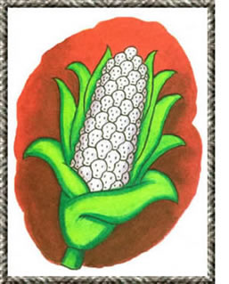

Suicidal Seeds
June/July 1999
BITS AND PIECES
Is it time to terminate the terminator?
In March 1998, the U.S. Department of Agriculture and Delta and Pine Land Company obtained a patent for their jointly developed "Technology Protection System." TPS, or "terminator" seeds as they've been dubbed by their adversaries, produce plants that are genetically programmed to kill their own embryos. Second-generation seeds are thus sterile and cannot be saved for next year's planting. Proponents of TPS argue that, by compelling gardeners and farmers to buy new seed annually, the technology will ensure the financial incentives necessary to encourage researchers to genet really engineer crops that are, for instance, drought or pest resistant (such genetic traits would be "stacked" onto TPS). Opponents insist the inherent dangers far outweigh any potential benefits and are calling for a ban on the technology.
Nine weeks after the patent was issued, Delta and Pine signed an agreement to merge with Monsanto, an industry giant that, since 1996, has spent $8 billion acquiring seed and biotechnology interests, making it the second largest seed company in the world. (The Delta/Monsanto merger now hinges on justice Department approval.)
Critics worry that if Monsanto manages to corner an even larger chunk of the global growers market while at the same time reducing the repeat viability of seeds-the result will be economic hardship for farmers, particularly those in poor, underdeveloped nations.
But beyond the economic concerns, say opponents, lie an array of potential ecological and agricultural risks. including cross-pollination with-and thus sterilization of neighboring crops.
In response to the above and other loudly voiced concerns, Delta and Pine Vice President of Technology Transfer Harry B. Collins notes that farmers worldwide have already embraced such feats of genetic engineering as inbred herbicides. "Given the opportunity, farmers will go to the technology," he says. Yet, with public funds for agricultural research on the decline, the future of such technology depends, argues Collins, on guaranteeing private researchers a return on their investment.
Longtime champion of sustainable agriculture Will Rapp isn't buying it. There is, he argues, "no agronomic benefit" to the use of terminator seeds. As founder and president of the Vermont-based Gardener's Supply Company, Rapp is at the forefront of a grassroots letter-writing campaign calling for a halt to the development of terminator technology and a moratorium on the further patenting of plant genes.
-Heatber Cox
Sources:
·For more on the anti-terminator campaign, contact Gardener's Supply Co., (8021880-3500, or visit the Web at www.gardeners.com.
· For more information on TPS, consult: "How the Terminator Terminates," by Mary L. Crouch, available on the Web at www.bio.Indiana.edu/people/terminator.html
|
 |
 |
|